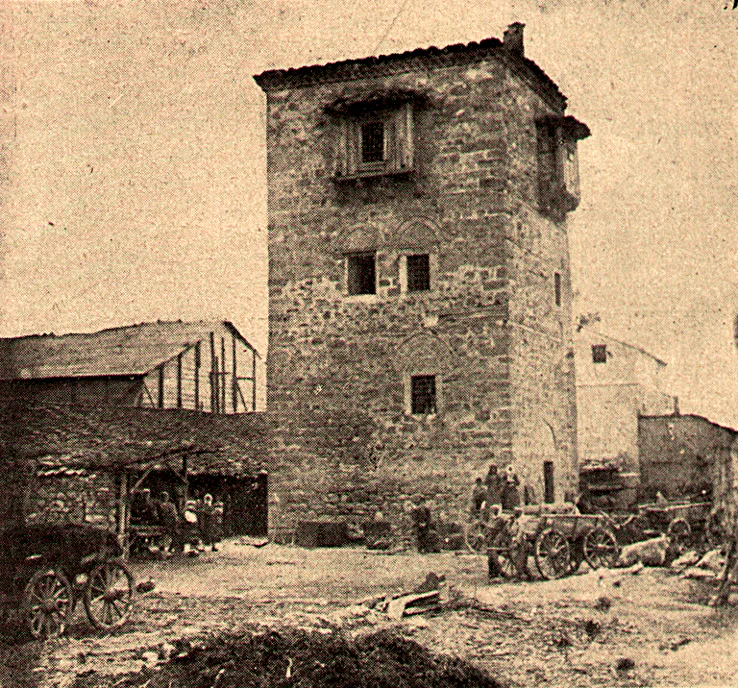
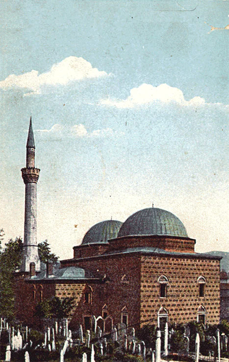

Description
The Burmali Mosque, photographed around the middle of the 19th century: the only mosque on the right bank of the Vardar, right next to the Stone Bridge. It was named after the spiral (burmali) shaft of its minaret. Built at the end of the 15th century, it was demolished in 1925 so that the Officers' Club could be built in its place.

The Burmali Mosque and a few buildings around it. An unformed street. A gathering place for carters with ox carts carrying trade goods. - end of the 19th century

Burmali Mosque - 1912 - 1918. The southern approach to the Stone Bridge, lined with merchants' and craftsmen's shops.

The Burmali Mosque with part of the Stone Bridge and the promenade beside it. To its left are the buildings right at the entrance to the Stone Bridge, which housed shops and craftsmen. - the 1910s.

Burmali Mosque - early 1920s. In front of the bridge are the first kiosks for passers-by and sales. The kiosks have distinctive architectural details, especially their roofs.

Burmali Mosque - 1920.

The Hatunduk Mosque with the türbe. In the background is the minaret of the Yahya Pasha Mosque. The Hatunduk Mosque dates from 1511 and was built by Hani Hatun, one of Yahya Pasha's daughters. Its name, Hatunduk, means little lady or young lady. - end of the 19th century.

Hadži Balaban Mosque. It stands between the Kuršumli An and the Dukandžik Mosque. Built in the 15th century. (end of the 19th century)

The Bey's Tower (or Feudal Tower). This tower belonged to a bey. It stands in front of the main entrance of today's Army Hall of the Republic of Macedonia. When it was built is unknown, but probably at the end of the 17th or beginning of the 18th century. The photograph is from the 19th century.

The Bey's Tower at the end of the 19th century.

The Bey's Tower at the beginning of the 20th century.

The Bey's Tower, the 1910s.

The old Kazandžiler Mosque, right next to the Kuršumli An. Built in the 15th century and known as the coppersmiths' mosque. (it no longer exists)

Dukandžik Mosque, built in the middle of the 16th century.

Kuršumli An, built in the middle of the 16th century, is a monumental example of Islamic secular architecture. It stands in the old Skopje bazaar, right next to today's Museum of Macedonia.

The Clock Tower and the Sultan Murad Mosque - the 1920s. The Clock Tower was built in the middle of the 16th century (1566-1572), the first clock tower in the Ottoman state. The clock mechanism, and the master who was to look after it, were brought from Szigetvár in Hungary after the Turks took the town. The Sultan Murad Mosque: Sultan Murad II, father of Sultan Mehmed the Conqueror, built this mosque as his endowment in 1436.

Sultan Murad Mosque, the 1910s.

Clock Tower and the Sultan Murad Mosque - the 1920s.

Clock Tower and the Sultan Murad Mosque - the 1920s.

Clock Tower and the Sultan Murad Mosque - the 1920s.

Clock Tower and the Sultan Murad Mosque - the 1920s.

Gazi Isa Bey Mosque - the 1920s. Built by Isa Bey, son of Ishak Bey, who erected the mosque after his father's death as an endowment. (15th century)

Gazi Isa Bey Mosque - the 1920s. Built by Isa Bey, son of Ishak Bey, who erected the mosque after his father's death as an endowment. (15th century)

Gazi Isa Bey Mosque - the 1920s. Built by Isa Bey, son of Ishak Bey, who erected the mosque after his father's death as an endowment. (15th century)

Gazi Isa Bey Mosque - the 1920s.

The Turkish cemetery, with the Gazi Isa Bey Mosque in the background - the 1920s.

Gazi Isa Bey Mosque - the courtyard - the 1920s.

Gazi Isa Bey Mosque - the courtyard - the 1920s.

Mustafa Pasha Mosque - the 1920s. It was built in 1492 by the then commander Mustafa Pasha.

Mustafa Pasha Mosque - the 1920s. It was built in 1492 by the then commander Mustafa Pasha.

Mustafa Pasha Mosque - the 1920s.

The Mustafa Pasha Mosque in the background, and below it, partly visible, the Pasha Yiğit Bey Mosque, the oldest mosque in Skopje. (it no longer exists) - the 1920s.

A street in the old part of the city, with the Ishak Bey Mosque, or Aladža Mosque, in the background. This mosque was built in 1438, in the first half of the 15th century, by Ishak Bey, commander of Skopje (son of Pasha Yiğit Bey, the conqueror of Skopje). Besides the mosque, as his endowment he also built a türbe, a madrasa, inns and buildings of Islamic secular architecture. In 1519 Mehmed, Ishak Bey's grandson, rebuilt the mosque and added the two side naves - the 1920s.
Orientation

On the old orientation map
Photo album


Topic
 Aqueduct4 postcards
Aqueduct4 postcards Kale30 postcards
Kale30 postcards Bridges60 postcards
Bridges60 postcards Quay58 postcards
Quay58 postcards Square46 postcards
Square46 postcards Buildings66 postcards
Buildings66 postcards Christian churches19 postcards
Christian churches19 postcards Muslim buildings33 postcards
Muslim buildings33 postcards Officers' Club29 postcards
Officers' Club29 postcards Theatre28 postcards
Theatre28 postcards Railway station13 postcards
Railway station13 postcards Schools36 postcards
Schools36 postcards Parks12 postcards
Parks12 postcards Markets18 postcards
Markets18 postcards Streets38 postcards
Streets38 postcards Panorama I60 postcards
Panorama I60 postcards Panorama II30 postcards
Panorama II30 postcards Collages55 postcards
Collages55 postcards Floods9 postcards
Floods9 postcards Earthquake27 postcards
Earthquake27 postcards Skopje 200026 postcards
Skopje 200026 postcards